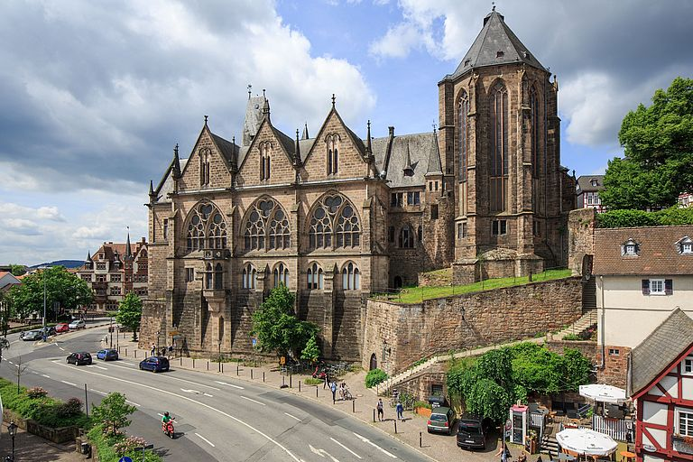
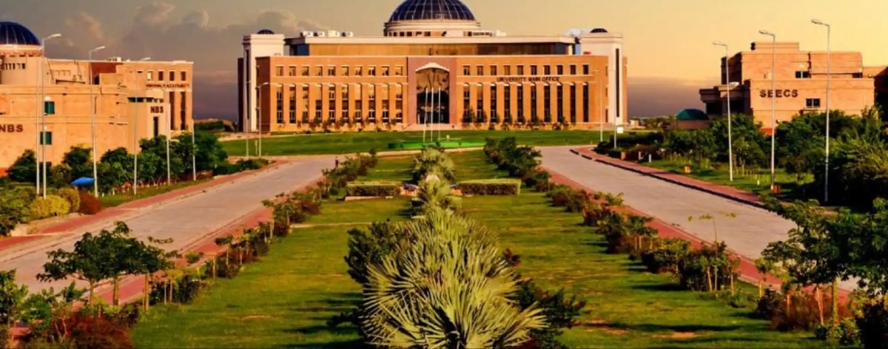
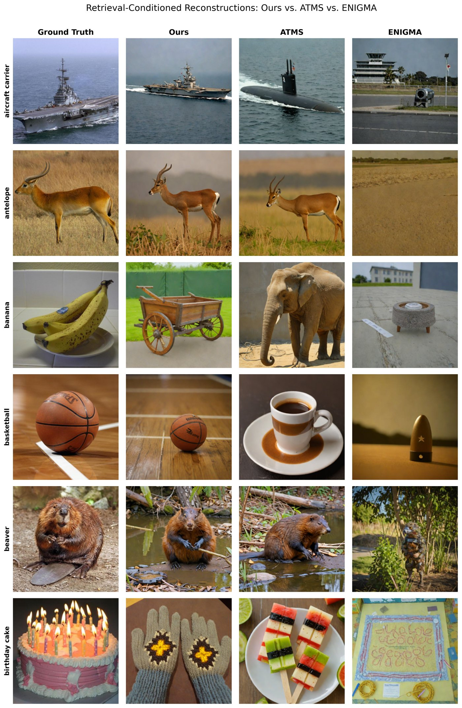

About
I am a PhD candidate in computational neuroscience at Philipps-Universität Marburg, working in the Psychcontrol Lab at the University Hospital Giessen and Marburg (UKGM). My work builds deep learning decoders that read out visual information from EEG, aligning brain signals with the semantic embedding space of vision-language models to enable image retrieval and reconstruction.
Before this, I completed my Master's in Computer Science and Engineering at Kyung Hee University, where I developed diffusion-based generative models for video compression and prediction. I am interested in how perceptual representations can be recovered from constrained information sources, whether a compressed bitstream or a noisy neural signal, using ideas from generative modeling, representation learning and information theory.
- Neural decoding
- EEG
- Representation learning
- Diffusion models
- Multimodal alignment
- Video compression
- Efficient inference
Education

Doctoral Candidate, Computational Neuroscience
Philipps-Universität Marburg, Germany
2026 – 2029
M.Sc. Computer Science and Engineering
Kyung Hee University, South Korea (CGPA 4.0/4.3)
2023 – 2026
Thesis: Latent Diffusion Models for Zero-Redundancy Video Coding

B.Sc. Electrical Engineering
NUST, Islamabad, Pakistan (CGPA 3.18/4.0)
2017 – 2021
Research

EEG-Vision Representation Alignment
Ongoing (PhD)
Decoding visual content from EEG by aligning brain signals with CLIP embeddings.

Perceptual Video Compression with Diffusion
Completed (Master's)
A diffusion codec that sends sparse semantic priors and motion at ultra-low bitrates.

Real-Time Disaster Management on UAVs
Completed (Undergraduate)
Quantized classification and detection running on-board NVIDIA Jetson.
Contact
sanama@uni-marburg.de
Marburg, Germany